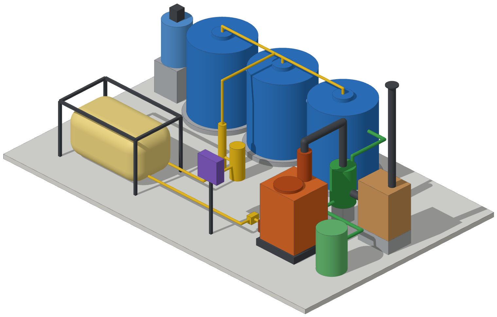
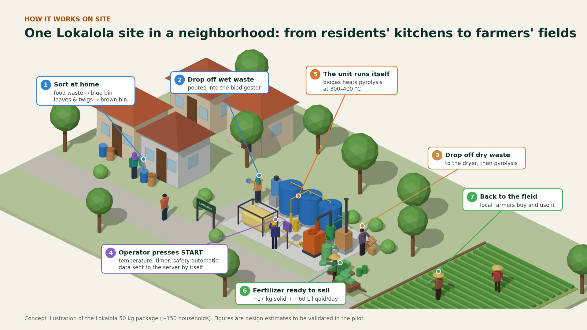

1Upstream
Waste piles up
- Transfer stations (TPS) refuse organic waste
- Residents burn it themselves
- Air pollution and disease
Pertamuda · seed and scale · Universitas Gadjah Mada
Integrated organic waste processing for community independence.
Lokalola is an integrated, community-based organic waste processing system that converts local organic waste into renewable energy and useful products, helping communities process their waste independently.

50 kg/day unit · design estimates, to be validated in the pilot
The problem
Local governments now refuse organic waste at transfer stations (TPS). It piles up, smells, spreads disease, and residents burn it. Few people know that organic waste can be fuel.
1Upstream
2Midstream
Missing piece: a district-level facility that turns waste into valuable energy
Lokalola fills the middle: one unit per district or village
3Downstream
Case study: Yogyakarta
Source: Policy Brief MAP UGM, 2021
Bar chart: 282 tons per day collected, 73 tons per day processed, 148 tons per day of processing capacity.
The processing capacity that exists is only about half used.
Half comes from households and communities, right where a district-level unit can reach it.
Stacked bar: households and community 50.78 percent, markets and commerce 26.96 percent, public facilities 13.38 percent, offices 6.03 percent.
Every ton of organic waste that fails to enter a processing system is a double loss: methane emissions from open dumping, and lost economic opportunity.
Lokalola is an integrated, community-based organic waste processing system that converts local organic waste into renewable energy and useful products, helping communities process their waste independently.
In short: one integrated facility package for 50 kg of organic waste a day, that a community can run with a single START button.
Biodigester, pyrolysis and fertiliser-making in one system, not three separate projects.
One START button. Temperature, timer and safety are automatic, and IoT sends the data by itself.
Technology, operational support, monitoring, maintenance and future upgrades from Lokalola.
3.5–4.7 m³/day
Replaces LPG: about 200 cylinders of 3 kg a year.
17 kg solid + 60 L liquid per day
A clear product to sell to nearby farmers.
IoT operating log
Temperature, pH and gas flow are logged automatically, so the energy benefit can be proven.
Locally manage for greater energy.
Processing waste closer to where it is generated turns a growing problem into a local resource.
Waste is the source, biogas is the stored energy, and heat that replaces LPG is the measured use. Explore the unit part by part.
Select a number (or use the arrow keys) to see each part.
3 × 2,000 L HDPE tanks in series · 4 m³ working volume · 52-day retention · anaerobic
Wet food waste (35 kg/day) ferments without oxygen and releases biogas. The digestate is then pasteurised at 70 °C so it is safe to use in fertiliser.
3.5–4.7 m³/day · H₂S scrubber · ~2.5 m³ gas bag
Biogas is cleaned by an H₂S scrubber, then stored in a gas bag. This is the stored energy: it heats the pyrolysis retort and delivers 76–101 MJ of heat a day, about 200 LPG cylinders (3 kg) a year.
15 kg/day of leaves and twigs
Dry waste from the brown bin goes in here, is dried, then fed to pyrolysis. Plastics and other non-organics are rejected.
1 retort (~110 L) · 300–400 °C · heated by biogas
Dry waste is heated without oxygen using the heat from the biogas and turns into biochar, a stable carbon that is later enriched into fertiliser.
~17 kg solid + ~60 L liquid per day
Biochar is enriched with pasteurised digestate into a clear, ready-to-sell fertiliser for nearby farmers.
ESP32-S3 · 4 type-K thermocouples · pH · gas flow meter · MQTT/4G · microSD log
One START button. Temperature, timer and safety are automatic and data reaches the server by itself: smart on the inside, so the operator's job stays simple.
Concept illustration of the Lokalola 50 kg package. Figures are design estimates to be validated in the pilot.
Energy & carbon impact
Lokalola does not sell energy as its main product. But every package carries a complete energy chain: a source, a store and a measured use that replaces a fossil heat source, LPG.
35 kg of food waste a day is digested without oxygen in the biodigester.
Biogas is cleaned by an H₂S scrubber, then stored in a gas bag: about 2.5 m³ on hand.
A biogas flow meter and 4 thermocouples feed automatic IoT logging, so the energy is measured, not assumed.
Heat for pyrolysis at 300–400 °C. Waste heat pasteurises the fertiliser and dries the feedstock.
One 50 kg package avoids or stores
0t CO₂e / year
Three parts add up: 7.0 + 2.7 + 1.8. Open each bar to see how we calculated it.
| Quantity | Result | How we get there |
|---|---|---|
| Biogas produced | 3.5–4.7 m³ per day | 35 kg food waste ≈ 7.0 kg volatile solids (VS) per day × 0.5–0.67 m³ biogas per kg VS |
| Heat available | 76–101 MJ per day | Biogas is ~60% methane (CH₄) × 35.8 MJ per m³ of CH₄ |
| LPG replaced | ≈ 200 3 kg cylinders per year | 76 MJ × 365 ÷ 46 MJ/kg ≈ 600 kg LPG a year ÷ 3 kg per cylinder |
Figures are design estimates to be validated in the pilot.
Estimator
Tell us how many households you serve. See how many 50 kg packages that takes, and what they could process, produce and avoid.
The slider is scaled so small villages are as easy to pick as whole districts. You can also type any number from 50 to 20,000.
Or start from a preset
Packages needed
4
each serves about 150 households
Waste processed
200 kg / day
73 tons / year
Biogas produced
14–18.8 m³ / day
304–404 MJ of heat / day
Fertiliser produced
68 kg solid / day
240 L liquid / day
LPG replaced
800 cylinders / year
3 kg cylinders of fossil heat fuel
CO₂e avoided
46 t / year
landfill methane, biochar storage and LPG
Indicative capex
IDR 340 M
Service Basic: 2.0–4.0 IDR M / month
Net owner benefit
8.0–10.6 IDR M / month
after electricity and full service
Indicative estimate based on design assumptions, to be validated in the pilot.
Two revenue streams from Year 1: a unit sale, and a service subscription that keeps every facility running and improving.
IDR 85 M per unit
IDR 0.5–1 M Service Basic
IDR million per month. Low vs high case differ only in the LPG replaced by biogas.
Low case: 1.95 + 0.93 + 0.38 − 1.26 = 2.00. High case: 1.95 + 0.93 + 1.02 − 1.26 = 2.64, shown as ≈2.65 in the source estimate. Design estimates, to be validated in the pilot.
Buy the unit
Get clean streets and independence in managing their own waste
Buy organic fertiliser from a nearby source
Get affordable, reliable-quality local organic fertiliser
Sells the unit, then the subscription
Gets recurring service revenue and data from every unit
Subsidised organic fertiliser
500,000 t/ year
Source: ANTARA, 2024.
Additional market: biochar carbon credits
≈ US$150/ t CO₂e
Source: S&P Global, 2025.
District governments, processors and communities.
Local farmers who need affordable, reliable-quality organic fertiliser from a nearby source.
Sell units to target districts and villages with hands-on support.
Servicing and AI data. Maintenance builds recurring cash flow while we keep upgrading the units.
Nationwide adoption. Hotels, restaurants, markets and malls feed our own large facility; biochar and biobriquettes are exported so we never compete with partner villages' fertiliser.
An end-to-end waste-to-energy supply chain, upgrading biogas into higher-value energy products.
50 kg package, IDR million
Revenue (IDR M)
Net profit (IDR M)
Cumulative net profit (IDR M)
CO₂e avoided (t/yr)
Projection for the 50 kg package (unit sales + service); illustrative, to be validated.
The MVP is not an app. It is a single unit closing one target district's waste stream end-to-end: waste in, measured heat, fertiliser out.

Wet kitchen waste and dry waste (leaves, twigs) from about 150 households.
The biodigester makes biogas, the biogas heats the pyrolysis. The heat used is logged.
About 17 kg solid and 60 L liquid fertiliser a day, sold to farmers near the site.
IDR 76 million
Every rupiah goes to proving one measurable energy chain, not to building an app.
Hover, focus or tap a segment to see its share.
Three non-financial things we need to make the pilot happen.
Follows the funding lines: from bench test to pilot package.
Test the process on the bench first.
Check fertiliser quality in a testing lab.
Install at the partner district, then measure biogas, heat and fertiliser.
Figures are design estimates to be validated in the pilot.
Lokalola started as a student venture at Universitas Gadjah Mada. Three engineering disciplines meet in one organic-waste system.
Industrial Engineering
Focus: process & operations.
Proposed by Lokalola TeamElectrical Engineering
Focus: IoT, sensing & electronics.
Proposed by Lokalola Team
Biomedical Engineering
Focus: biological process, safety & quality.
Proposed by Lokalola TeamThe brand mark
Three leaves, one cycle for a better future.
Inspired by nature.
Supports the circular economy of waste.
Simple, modern shapes.
We are looking for three partners for Lokalola's first pilot: a partner district or village, a testing lab, and energy & carbon mentors.
I am…
Locally manage for greater energy.
Thanks for wanting to close the loop with us.
Developer note: this static demo does not send data anywhere. TODO: connect the form to a backend or email service.